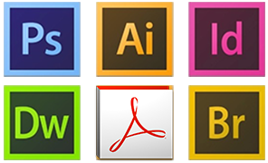

EXPERIENCES PROFESSIONELLES
- 2010 - 2014 - Saisonnière chez un maraicher
- 2013 - Conseillère de vente chez Bel Air
- 2013 - Prise en charge de la partie rédactionnelle du site web de la librairie "Une page de vie"
- 2014 - Création d'outils de communication (Communiqué de presse, dossier de presse, flyer, cartes de visite, jeux concours) pour la marque de pappeterie "Because Paper rocks!"
- 2014 - Participation à des opérations de street marketing - Distribution de prospectus
- 2014 - Conseillère de vente sur les châlets de Noel